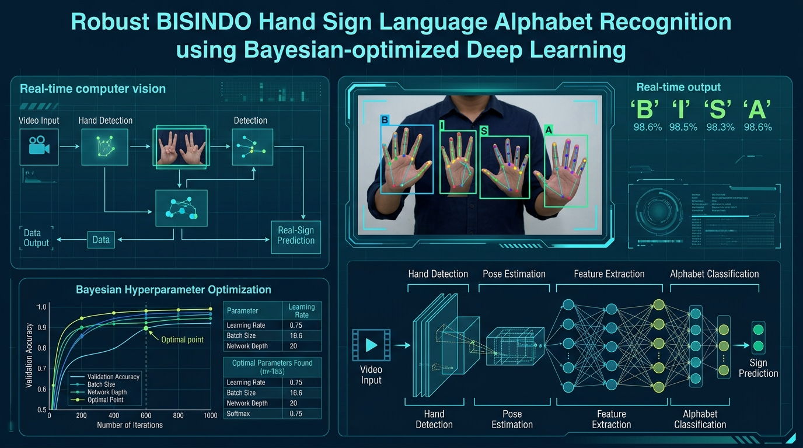

Yopy Tri Buana
Building Knowledge, Technology, and Meaningful Solutions in
Artificial Intelligence
Akademisi dan praktisi Informatika dengan ketertarikan pada Artificial Intelligence, Computer Vision, Software Development, dan teknologi berbasis data.
Hello, I'm Yopy.
Saya adalah seorang akademisi dan praktisi di bidang Informatika yang menikmati proses belajar, membangun sesuatu dari ide menjadi nyata, dan berbagi pengetahuan dengan orang lain.
Perjalanan saya berkembang dari software development, mobile development, teaching, hingga research di bidang Artificial Intelligence dan Computer Vision.
Teaching
Mentransfer konsep teknologi kompleks menjadi materi yang terstruktur dan mudah diaplikasikan.
Technology
Membangun arsitektur perangkat lunak modern, web, dan sistem mobile yang tangguh.
Research
Eksplorasi optimasi model deep learning untuk menyelesaikan permasalahan inklusif di dunia nyata.
Continuous Learning
Berkomitmen menjaga rasa ingin tahu intelektual serta relevansi keilmuan secara berkelanjutan.
A Little About Me
Ringkasan latar belakang personal dan identitas profesional yang terverifikasi.
Beyond the Resume
"Saya percaya bahwa perjalanan hidup bukan hanya tentang pencapaian, tetapi juga tentang proses belajar, pengalaman, dan bagaimana kita memberikan manfaat kepada orang lain."
Saya menikmati proses ketika sebuah ide yang awalnya sederhana berkembang menjadi sesuatu yang dapat digunakan dan memberikan manfaat. Mulai dari merancang baris kode pertama hingga menyusun arsitektur sistem berskala nyata, esensi utamanya selalu sama: memecahkan persoalan yang dihadapi manusia.
Bagi saya, teknologi adalah alat. Yang lebih penting adalah bagaimana kita menggunakannya untuk memecahkan masalah dan memberikan kontribusi yang positif bagi lingkungan sekitar kita—baik melalui ruang kelas kuliah, karya riset ilmiah, maupun interaksi sosial sehari-hari.
What Matters to Me
Nilai-nilai fundamental yang memandu keputusan dalam dunia akademik, karier teknologi, dan kehidupan personal.
Integrity
Berusaha menjaga kejujuran dan tanggung jawab dalam pekerjaan maupun kehidupan.
Continuous Growth
Percaya bahwa setiap hari selalu ada sesuatu yang dapat dipelajari dan diperbaiki.
Responsibility
Berusaha menyelesaikan apa yang telah menjadi tanggung jawab dengan dedikasi tinggi.
Family
Menghargai keluarga, hubungan, dan orang-orang yang memberikan dukungan dalam perjalanan hidup.
Contribution
Berusaha memberikan manfaat melalui ilmu pengetahuan, pekerjaan, dan pengalaman bersama.
Academic Journey
Fondasi keilmuan yang melandasi pemikiran analitis dan pendekatan riset berbasis data.
Magister Informatika (M.Kom.)
Optimasi Multi-Objektif YOLOv8 dengan Bayesian Hyperparameter Tuning untuk Deteksi Alfabet BISINDO dalam Pendidikan Inklusif
Sarjana Teknik Informatika (S.T.)
Membangun pemahaman inti dalam algoritma pemrograman, rekayasa perangkat lunak, arsitektur database relasional, dan logika komputasi modern.
Professional Journey
Pengalaman nyata dari perancangan sistem perangkat lunak, asistensi perkuliahan, hingga pengolahan data.
Asisten Dosen & Staff Pusat Pengolahan Data
- • Mendampingi kegiatan pembelajaran dan perkuliahan mahasiswa
- • Membimbing praktikum laboratorium komputer dan pemrograman
- • Mendukung operasional pengolahan data akademik institusi
- • Membantu pelaksanaan dan administrasi kegiatan akademik
Tenaga Ahli — Mobile Developer
- • Pengembangan aplikasi mobile berbasis teknologi terkini
- • Pengembangan arsitektur sistem dan integrasi layanan kampus
- • Implementasi dan pemeliharaan teknologi perangkat lunak
What I Build With
Perangkat, bahasa pemrograman, dan framework yang digunakan dalam pengembangan riset dan rekayasa perangkat lunak.
Artificial Intelligence
Programming
Web Development
Mobile
Database
DevOps & Workflow
Research & Curiosity
Eksplorasi metodologi ilmiah, arsitektur deep learning, dan aplikasi nyata kecerdasan buatan.
Computer Vision
Object Detection & Image Classification untuk pemrosesan citra digital presisi.
Artificial Intelligence
Machine Learning & Deep Learning untuk pemodelan data berdimensi tinggi.
Model Optimization
Bayesian Optimization & Hyperparameter Tuning untuk efisiensi model neural.
Data Analytics
Eksperimentasi empiris, evaluasi metrik kinerja model, dan validasi statistik.
AI for Education
Teknologi pembelajaran interaktif dan aksesibel untuk mendukung pendidikan inklusif.
"Saya tertarik pada penelitian yang menggabungkan teknologi AI dengan permasalahan nyata."
Optimasi Multi-Objektif YOLOv8 dengan Bayesian Hyperparameter Tuning untuk Deteksi Alfabet BISINDO dalam Pendidikan Inklusif

Mengenali alfabet Bahasa Isyarat Indonesia (BISINDO) secara otomatis dengan akurasi dan kecepatan inferensi yang stabil.
Computer Vision + YOLOv8 + Bayesian Hyperparameter Optimization untuk mencapai trade-off optimal antara presisi dan efisiensi komputasi.
Mendukung teknologi pembelajaran yang lebih inklusif dan mempermudah komunikasi bagi teman tuli serta masyarakat luas.
Research Publications
Daftar publikasi artikel ilmiah terindeks pada jurnal nasional dan internasional bereputasi.
Comparative Evaluation of Optimizer in YOLOv8 for BISINDO Alphabet Detection
Perbandingan optimizer pada arsitektur YOLOv8 untuk deteksi alfabet Bahasa Isyarat Indonesia (BISINDO) guna mengidentifikasi konvergensi terbaik pada dataset gestur tangan.
Deep Learning-Based Soybean Leaf Disease Classification
Pemanfaatan Deep Learning untuk klasifikasi penyakit daun kedelai secara otomatis guna mendukung diagnosis dini dan ketahanan pangan agrikultur modern.
Teaching
Mendampingi mahasiswa memahami konsep dasar hingga penerapan rekayasa perangkat lunak dan kecerdasan buatan.
"Saya menikmati proses ketika sebuah konsep yang awalnya terlihat sulit dapat menjadi sesuatu yang sederhana dan dapat dipahami mahasiswa."
Programming
Programming & Object-Oriented Programming (OOP) dengan penekanan pada logika clean code dan modularitas.
Software Development
Software Engineering & Application Development mencakup SDLC, requirements analysis, dan pengujian sistem.
Database
SQL, Database Design & Data Modeling untuk integritas relasional dan efisiensi query.
Cloud & DevOps
Cloud Computing, Docker & Git untuk manajemen versi tim dan kontainerisasi aplikasi modern.
Web & Mobile
Laravel, Vue, Next.js & React Native untuk perancangan aplikasi responsif multi-platform.
Artificial Intelligence
Machine Learning, Deep Learning & Computer Vision dengan studi kasus pemecahan masalah empiris.
How I Teach
"Mahasiswa tidak harus langsung bisa. Yang penting mereka berani mencoba."
Saya berusaha membuat teknologi yang terlihat kompleks menjadi lebih mudah dipahami melalui contoh nyata, praktik langsung di laboratorium, eksperimen mandiri, dan diskusi dua arah yang membangun rasa percaya diri mahasiswa.
A Simple Philosophy
Perjalanan karier dan pendidikan adalah bagian dari proses. Yang penting bukan hanya seberapa jauh kita berjalan, tetapi juga bagaimana kita tetap belajar, menghargai orang lain, dan memberikan manfaat sepanjang perjalanan tersebut.
From Developer to Educator & Researcher
Lintasan evolusi diri dari antusiasme menulis kode hingga dedikasi pada riset dan pengajaran.
What I'm Working Toward
Tiga pilar komitmen masa depan dalam kontribusi akademik dan pengembangan profesional.
Better Teaching
Membuat pembelajaran Informatika lebih mudah dipahami, praktis, relevan dengan kebutuhan industri, serta membangkitkan rasa ingin tahu intelektual mahasiswa.
Meaningful Research
Mengembangkan penelitian yang tidak hanya menghasilkan publikasi ilmiah bereputasi, tetapi juga memiliki manfaat konkret bagi masyarakat dan kelompok disabilitas.
Continuous Growth
Terus belajar dan mengembangkan kemampuan dalam teknologi mutakhir, kepemimpinan akademik, serta integritas dalam kehidupan profesional sehari-hari.
"Technology is not just about building systems.
It's about creating solutions that matter."
Let's Connect
Terbuka untuk diskusi akademik, kolaborasi penelitian AI, pengajaran, atau sekadar berbagi pengalaman.
Yopy Tri Buana, S.T., M.Kom.
Silakan hubungi saya melalui jalur komunikasi profesional di bawah ini. Saya menyambut baik ide kolaborasi riset, pembimbingan akademik, atau diskusi teknologi.
Send a Direct Message
Formulir responsif untuk pertanyaan akademis atau tawaran kolaborasi.